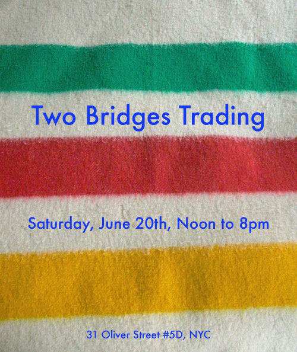
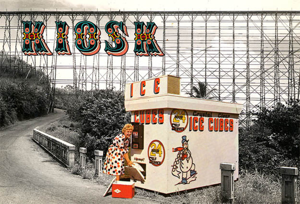

June 19, 2009 by mimecine
Ken Brown says:
“one of my favorite areas of discovery and exploration is found in the borderlands of the city, where art and nature meet and merge in a post industrial landscape …”
I think his photos are beautifully haunting


In: art, KIOSK, nostalgia, USA
- Comments closed
by mimecine
Jason has been invited to do a Plastic Bag Happening in Finland! Stop by if you happen to be in the neighborhood
Jason Rosenberg
Plastic Bag Happening
June 22, 2009
B-Butik, B-Galleria
Turku, Finland
In: 2009, Finland, KIOSK, Mini-Exhibitions, Opening
- Comments closed
June 18, 2009 by mimecine
In: weather
- Comments closed
by mimecine
check out this sale, there should be lots of neat stuff by artists and friends to browse through and… homemade ice cream!

Featuring art, books, zines, mixtapes, clothing, jewelry, and other ephemera by:
Andrew De Francesco, Ariel Dill, Beau H. Rhee, Bennie De Grasse, Brian Faucette, Carlen Altmen, Christian Samson, Daniela Jacobs, Denise Schatz, Eliza Honey, Erik Lindman, Geometric Sleep, Jonathan Mandabach, Juan Antonio Olivares, Julie Clark, The Kingsboro Press, Liturgy, Marco Barrerra, Matthew Moravec, Maya Barrera Loeb, Medium Rare, Mikaela Bradbury, Morgan Silver-Greenberg, Pipertree Leather, Rachel Antonoff, Ryan Foerster, Samantha Moyer, Samantha Pleet, Shawn Kuruneru, Teeny House Bunny, Zack Kitnick+ many more
Plus, homemade ice cream by Stephen Lowery!
ONE DAY ONLY – OPEN TO THE PUBLIC – CASH ACCEPTED
In: Opening, shop, USA
- Comments closed
June 17, 2009 by mimecine
 Hello! My name is Ming and I work at KIOSK. From today on, through the rest of the summer, I will be bringing you interesting things, ideas, and people live in the pages of this blog. I’m going to try to do this pretty regularly to keep you readers sated. Hope your summers are going well!
Hello! My name is Ming and I work at KIOSK. From today on, through the rest of the summer, I will be bringing you interesting things, ideas, and people live in the pages of this blog. I’m going to try to do this pretty regularly to keep you readers sated. Hope your summers are going well!
In: Blogs, hello, summer
- Comments closed
June 14, 2009 by mimecine

A customer came in the other day and told me he is from the tiny town where our cornmeal comes from, Hartford, Alabama, and he went to High School with the current owner. What a surprise! We spoke for awhile and he gave me the following cornbread recipe, very tasty. I am on a sugar hiatus but next time I would try making it with honey as a sweetener or even agave. Here is the recipe for you to test out, with or without the Pollard’s cornmeal. Just be sure to use a quite fine cornmeal, it makes the bread creamy. Let us know what you think! Compliments of Scott Peacock! It makes about 12 muffin sized breads.
1 1/2 cups of fine to extra fine cornmeal
1 teaspoon of salt
1 teaspoon of baking soda
2 eggs
1 tablespoon melted butter
close to 2 cups of buttermilk (add enough to make the batter pourable, you will think it is maybe too thin)
mix it all up so the batter is thin and shiny, pour into a buttered 9″ cake pan or standard muffin trays
bake at 375 until very golden brown, I recall it was about 20 -25 minutes
eat with butter and honey or maple, strawberries and cream, etc etc
- Comments closed
June 13, 2009 by mimecine

Just woke up by a insect party in our apartment. The latest guests to arrive seemed to have been the mosquitos. Typical – I mean any party just turns sour when they arrive… Lucky enough there is a can of ‘ditch that itch’ next to the bed. Science raised as I am I don’t know if it’s placebo or not, but if it is it’s strong and saved my nerves for the night. Sorry for the plug, but I am pretty grateful for the cream. Now, why the hellz do I have a computer next to the bed? Oh, and smack! Dead you are damn long-nosed bloodydouble sucker! Sorry, dear buddhists – some pests may not come near me without experience a terminal chase aiming at their violent death! I think it whispered that it’s name was ‘Mick’ just before meeting my hard hand!
- Comments closed
June 8, 2009 by mimecine

We are proud to show this longtime idol of ours. Ken Brown, the creator of all those postcards that so inspired us to this day. Seldom did we feel as dumbfounded as when we realized all these pictures we had littered our walls with (oh, and I had a few wicked rubber stamps too) came from one and the same source – Ken Brown’s imagination. A very influential imagination indeed…
Postcards from Ken Brown, a retrospective of sorts… after reading Ken’s answers to our questions I think you will understand exactly why we invited him to KIOSK.
Opening Party June 11 from 7 -9 pm, the show will be on view from June 11 – June 20th. Postcards for looking, postcards for buying.
Background:
“My first experience as a practicing artist was as a film maker. During the late 60’s I created dozens of short experimental films that became part of a New England based light show which for over 2 and a half years played with everyone from Jimi Hendrix to the Velvet Underground, the Who etc.”
Reason:
“I’ve always loved postcards. They are the original populist medium, affordable, accessible and abundant and, as an artist interested in skirting the gallery system, they seemed like an ideal way to get work out to a larger audience. I admit that I had no idea what I was doing and had no business plan, but in 1975, I took what little savings I had and invested in a print run of 2000 each of 12 different photographic postcards.”
Development:
“In 1985, in another feet first production, we moved to NYC. I continue to juggle design work as an active art/entrepreneurial enterprise while also producing regular spots for MTV and Sesame St. Also in 1985, Harper and Row (now Harper Collins) publish a collection of my cartoons- Notes from the Nervous Breakdown Lane”
Influences:
I have a long standing love of American pop culture and it remains a constant theme throughout my work.
How many cards:
Over 34 years and close to 700 different designs, a rough guess would be about 2 to 3 million cards littering the landscape.
Summation:
“I love living in New York and thrive on the culture and general visual vibrancy of the place. uh oh, … starting to ramble”
In: Mini-Exhibitions, New York, Opening
- Comments closed
May 2, 2009 by mimecine
So today kind of started so-so when walking over to the store with a coffee in hand I got bumped by a large Scandinavian tourist who were swirling around in Washington Square Park, getting half my very expensive coffee spilled all over my very inexpensive blazer. To console myself I went to Grandaisy Bakery to pick up something yummy to up my mood. And what do they have there if not a Scandinavian “lyxrågmacka” – they call it Il Scandinavio or so. It’s sliced eggs, sliced cucumber, capers and red onion on seven grain dark bread. I meant to take a picture, but after passing the sandwich too close to my mouth it disappeared, leaving but the wrapping as evidence of it’s existence. Why am I telling you? Two things: One is of course they are damned good sandwiches. Get them when you are in soho next time. Come by us too for that matter! Secondly, I have been daydreaming of opening a Swedish sandwicheria for years! I even got myself sent a whole load of Swedish crispbread to do a smörgås-mini-exhibition one of these days in the store. Seeing Grandaisy beat me to it of course make me want to hurry up with my exhibition.

In: food, Mini-Exhibitions, soho, Sweden
- Comments closed
April 27, 2009 by mimecine
Finally you say, finally we say, FINALLY we have America Installment #2, our second American collection, finished. For #1 we headed north to Massachusetts, for #2 we headed south to Florida. Another time, another place, another Froth on the Daydream. From the Mouse to the Everglades, from the Keys to the Panhandle, we traveled over 4,000 miles, we met many, we saw much and we had a great time. One of the most undervalued destinations by some and most loved by several, Florida provided plenty of fodder for KIOSK. Please join us for a beer and a chat on Friday May 1 (don’t forget the workers on May Day) from 6 – 9 in our shop at 95 Spring St. Hope to see you here! We hope you like what we found!
In: America, florida, KIOSK, Opening
- Comments closed